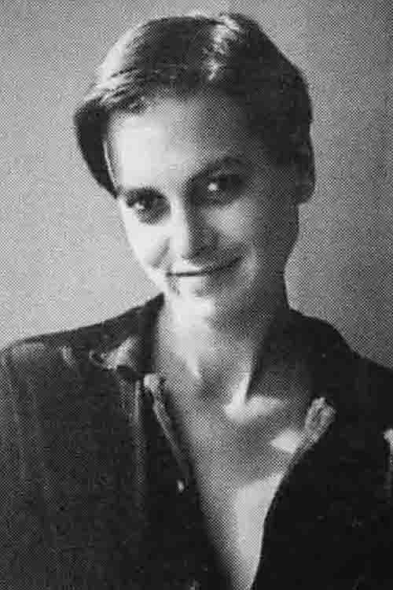
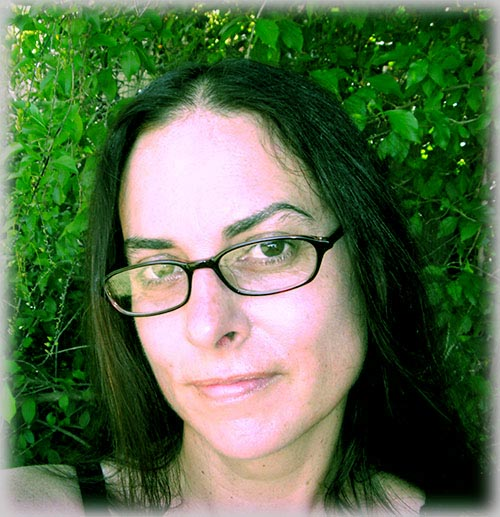

|
Jordie Albiston 1961- 2022  Jordie Albiston reading from The Hanging of Jean LeeORBITUARY Melbourne-based poet Jordie Albiston has died, aged 60. Born and raised in Melbourne, Victoria, Albiston studied music at the Victorian College of the Arts and received a Doctorate in English from La Trobe University. With a career spanning over 25 years, Albiston was the author of 17 books. Her first poetry collection Nervous Arcs (Spinifex) won the Mary Gilmore Award, and her fourth The Sonnet According to M (John Leonard Press) was awarded the Kenneth Slessor Prize for Poetry at the 2010 NSW Premier’s Literary Awards. In 2019, Albiston won the Patrick White Award for her contribution to Australian literature. Albiston was a finalist for the 2021 Melbourne Prize for Literature, and her most recent collection Fifteeners (Puncher & Wattmann), posthumously won the John Bray Poetry Award in the 2022 Adelaide Festival Awards for Literature. Puncher & Wattmann publisher David Musgrave writes: ‘Jordie Albiston, who died suddenly at the age of 60 on February 28, will be remembered as one of Australia’s great poets. During her career she published 13 poetry collections, three poetry collections for children and a poetry textbook, which is widely used. ‘She pioneered the documentary form in Australian poetry with Botany Bay Document (1996) and The Hanging of Jean Lee (1998). Her landmark collection The Fall (2003) established her as a poet with a wide range, and also showcased her deep interest in form. This was furthered in virtuosic manner in Vertigo: A Cantata (2007), which was informed by her accomplished musicianship (Jordie studied at The Victorian College of the Arts, specialising in flute) in a highly innovative way, and The Sonnet According to M (2009), in which her interest in the sonnet form was played out to a highly inventive degree. Her work was bold, brave, and continually broke new ground, often in playful ways, but always brilliant. ‘She was a modest and unassuming person and was deeply uncomfortable being the centre of attention, completely withdrawing from public events in the last few years. She was deeply generous to other poets’ work and was a mentor to, and supporter of, many emerging poets. Her Selected Poems will be published by Puncher & Wattmann later this year and will include poems from the several manuscripts she was working on at the time of her death. She is survived by her husband Andy, children Jess and Caleb, and their partners and grandchildren.’ Poet and critic Thuy On of ArtsHub writes: ‘She was a disciplinarian in her craft, an elegant classicist who nonetheless knew how to bend and break the many constricting rules of rhyme, metre and line space for resonance and impact. Throughout her entire oeuvre, the reader bears witness to Albiston’s nuance and sensitivity and sees how her musical background reveals itself in cadenced lyrics. Her flair for experimentation meant that no new book resembled the previous effort. ‘Through her biographical narrative pieces, Albiston touched upon historical events, re-imagining the stories of the last woman hanged in Victoria, the women settlers of Port Jackson and Botany Bay, WWI soldiers in Victoria and an Antarctic adventurer. But Albiston also looked inwardly and reflected upon perennial, evergreen themes of domesticity, desire, and loss set in contemporary times. ‘Her febrile interest in mathematics and chemistry meant that her poetry was often exacting in its form. As for their contents—it’s impossible to pin down her interests. How can one do that for a poet who roamed so freely? Who else but Albiston could harness the periodic table as a trope to explore the fundamentals of love? ‘Aside from her plying her writing skills, Albiston was also a manuscript assessor, proof-reader, editor and mentor. There’s been a chorus from fellow poets on social media lauding her work and from others whose careers she has nurtured over the years.’ |
|||||||
 |

Jordie Albiston has published seven collections of poetry, her first being Nervous Arcs (Spinifex, 1995) [Co-published alongside Diane Fahey’s The Body in Time], winner of the Mary Gilmore Award, My Secret Life (Picaro Press, 2002), The Fall (White Crane Press, 2003), Vertigo: A Cantata (John Leonard Press, 2007) and the sonnet according to ‘m’ (John Leonard Press, 2009). She was shortlisted for the Victorian Premier’s Literary Awards and the C.J. Dennis Prize for Poetry in 2003 and for the New South Wales Premier’s Literary Awards and the Kenneth Slessor Prize for Poetry in 2004. She was joint winner of the Wesley Michel Wright Award in 1991, and has also won the Dinny O’Hearn Memorial Fellowship. She has a PhD in Literature, enjoys cooking, being in the ocean, and long walks with her dog, Jack.
Interview with Jordie Albiston Kate Middleton Famous Reporter, No. 24, December 2001KM : You once wrote an article that, in part, responded to a young reader who had asked you why you ‘never write poetry about yourself’; at the same time, I remember Dorothy Porter once referred to her verse novel Akhenaten as her most autobiographical work. Do you feel that in working with the structure of other people’s stories, specifically in your last two books, it is easier to take risks, or write personally? JA : Well, I’m going to have to
echo
Dorothy, because I don’t often write about my own life as
such - you know, ‘I
went to the shops, ran into Kate, etc...’ For me, those last
two books are
about me as much as they’re about the subject at hand: I see
it as a question
of metaphoricity, and in the case of a full-length book concerning one
person,
event or theme, the metaphor is simply extended. It’s the
same principle as
writing a metaphor of self into one poem or one single image, but
extended. How did you come to choose those
particular stories? I was originally going to concentrate
my doctorate on the first fifty years of white settlement at Obviously you have an academic
background - you say that you didn’t consider it much of a
leap from your PhD
to a book of poetry. How does your academic background inform your work? I think studying has given me a sense
of discipline and precision as a writer. When I sit down to write
poetry, I’m
disciplined: I turn the computer on, take the phone off the hook, shut
the
curtains, and focus. I didn’t used to be such a focussed
person... Also, in the
academic world, you can’t afford to make many mistakes as
such, or write
assumptions into your work: everything has to be checked. You have to
learn to
retain the spelling of a particular name, or what year such-and-such
happened,
or was said, or written. You have to. And hopefully that precision
feeds back
into the poems. Academia also taught me how to research: where to
begin, how to
go about it. Recently your work has begun to take
off in different directions from your last two books - last year there
was the
one-woman show of The
Hanging of Jean Lee at La Mama, and now
both Botany Bay Document and
The Hanging of Jean Lee are
being written as operas. How do you feel about the fact that your work
is being
taken to different audiences in this way? Well - this is a difficult question,
because you’re one of the composers! Any artistic act that
evolves from some
writing I’ve done has little to do with me, in its new form,
really. My job is
finished. I don’t feel that ‘my work’ is
being taken to different audiences:
it’s the stories themselves being taken to different
audiences in different
ways, and it’s a layering kind of thing. The ABC also did a
radio dramatisation
of Jean Lee, and yes, they’re my words, but it’s a
dialogue, it goes on. If
another artist picks it up, it’s going to affect people
differently depending
on how it’s constructed. Because these stories are historical
- You have a background yourself in
music. How has that influenced your work? Totally. I don’t think
I’d be a poet
at all if I didn’t have that background: the two are so
intermeshed. I learned
piano and then flute as a girl and ended up at the College of the Arts,
although I enjoyed flute itself less and less as time went by.
I’m a cellist by
nature, although I don’t play the cello! But more than that I
think it’s been listening
to music all my life: classical music was always playing as I grew up.
I
starting off liking people like Lutoslawski and Janacek, and from there
found
my way to Hindemith, Webern, Ligeti, and then I went backwards, and
I’ve only
really begun to appreciate composers like Mozart and Schubert in the
last
fifteen years or so. Beethoven and Bach were always there, of course -
and Bach
is my favourite composer of all - but some others have taken me a long
time to
engage with. And in terms of influencing my writing, I’m
interested in that
fourth dimension of poetry, the actual physical and psychological
connections
between words and lines: and that’s similar to orchestration
in music. I mean,
with music, all you’ve got are musical notes and silences.
That’s it: they’re
your tools. Notes and silence. And with poetry, it’s words
and spaces. My poems
are fairly structural, and I know I’m a bit formalistic for
many people’s
tastes, but I do believe in things like unity, balance, symmetry... a
poem
doesn’t necessarily have to look visually
symmetrical to please me as a
reader, but there has to be a very particular sense of organic order
and
cohesion: a beginning and an end, and a relationship between every part. You work a lot with form. How much do
you use traditional forms, or create your own forms - and what
advantage do you
see in adhering to those forms in your own work? Well, there’s nothing
without form -
there’s no poem without form. Content and form:
they’re the only two elements.
And poems simply about how someone’s feeling don’t
really appeal to me as a
reader. There’s got to be some structure there, in terms of
both content and
form. And personally what I like about form is that for every
restriction
offered, there’s always a liberty as well, hidden away in
there. There’s no
reason to be scared of form, because for every rule there’s a
window or even a
whole tesseract that opens, and it’s that kind of movement
that I like, that
kind of momentum... Obviously the rhythmic aspect of your
poetry is very important, and that does get quite complex at times. I
remember
once when I was talking with someone about my own work, they suggested
that I
go through my various writing stages, and that the final thing I do be
a
rhythmic rewrite, to make sure the rhythms fall into place. What sort
of
process do you go through to write a poem. Are there those stages? Do
you start
with the idea of the rhythm? That’s a good question. I
tend to
start with a shape, actually, an architectural kind of figure.
There’s a shape
I want to express. It’s this thing I want
to make, and then I look for
the right content that might suit that thing. Sounds a little boring,
doesn’t
it? Not very emotional - but for me, the passion is in the maths.
Rhythms
themselves come fairly naturally. I lean to the triple meter side of
things,
but I enjoy enjambment and other ways of upsetting the apple-cart... What kind
of drafting process do you go through with a poem? I write straight onto screen, and
always have. I only use paper if I’m stuck without my
computer! And as far as
the drafting process is concerned, I don’t print off until
I’m pretty sure what
I’m doing is ‘right’. It never is, of
course, but it means I do print off at a
late stage. I don’t keep working notes or drafts, I prefer
not to leave many
traces at all. I don’t have journals (or at least only blank
ones!), I barely
write letters, and it’s the same with drafts: they hit the
bin as soon as I’m
finished with them. Do you have any kind of writing
rituals you go through? You mentioned before that you write straight
onto the
computer, and you’ve also told me before that you start the
day reading
biography and poetry; do you have reading and writing schedules that
you follow
when you are writing? Well, it’s a bit different
being on a
grant rather than working fulltime at the moment, because I’m
able to make
those rituals for myself, timewise anyway. My writing days are
Thursdays,
Fridays and Saturdays - only three, but they’re full days,
often sixteen-hour
marathons. The rest of the week is pretty much filled with reading,
cooking,
teenagers, the business of life. Occasionally I make a couple of notes
between
Sunday and Thursday, but most of it’s happening in my head
and I don’t turn on
the computer or pick up a pen. And I do read biography everyday -
that’s my
nurturing source. Any particular biographies? Anyone - almost anyone. When I go into
bookshops, I head straight for the biography section. Whatever.
Churchill’s letters.
Anybody. Just to see where they went wrong, where they went right, how
it was
for them. They don’t need to be artistic, although often they
are musicians or
painters or writers, but it’s certainly not just those
people. It’s anybody
really. I’ve been reading about Leonard Bernstein, and Darwin
recently. 
When did you start writing? When I was little - around
kindergarten time. Mum and Dad still have poems I wrote when I was four
or
five, and one grandmother used to mark them for me out of ten! Then
writing was
replaced by music for probably fifteen years, and I really
didn’t start again
until I was about twenty-eight. That was an epiphanal year, and poems
began to
come. Those early pieces are long trashed, but there was that
recognition, that
feeling of ‘This is where I belong’. So I kept on
going. Can you note any particular
influences, either in your early work, or what you’re doing
now? Among writers? It’s funny, I
feel some
prose writers have had a big effect on me, which may not make immediate
sense
if we’re talking about line turns, but there’s
Janet Frame, Paul Auster, Toni
Morrison. The Bible is a good source of inspiration, and has been
influential -
the actual language of it, not just the stories - especially the King
James,
its particular syntax and choice of words. And of course Emily
Dickinson, the
Americans. Bob Dylan. Other than that, I’m pretty much
interested in what
anyone’s doing. The Australians I like to follow would
include Peter Porter,
Rosemary Dobson, Mark O’Connor, Jan Harry, Jenny Harrison,
Alex Skovron... this
is hardly an exhaustive list. More recently, there’s been
Peter Minter, Rebecca
Edwards...I’ve been reading Mark O’Flynn lately...
you go through phases, where
you just really love one writer and read all their books... I tend not
to read
much poetry as I’m getting toward the end of the week and
preparing to write
myself, because it is easy to be influenced, and I’m much
more strongly my own
writer when I’m isolated from other poets. I mean I live with
a poet - you’ve
got to keep certain barriers, otherwise it all starts bleeding into
itself, and
you end up in a big mess of words. Have you ever written creatively in
other forms? You mentioned that prose is an influence on your poetry -
have you
attempted prose writing? Or are you interested in doing so? I wrote a terrible novel when I was
about twenty-two, which you will never see. That
showed me I am not a
novelist, definitely! I’ve also written a couple of short
stories. One of them
was in an early Picador New Writing, but I could
see afterwards it was
simply a long poem put into short story form. I tried a few more -
maybe four
or five - but they just didn’t work. No, I’m just a
poet. I love poetry as a
genre because you have to pay so much for every word that you use.
It’s a very
costly literary exercise, as opposed to writing a novel. I mean, a poem
is so
economically driven. I guess that’s where the maths comes
into it for me,
because every single word has to have a relationship with every other
word, and
somehow you’ve got to write music into it as well, if you
can. It’s such a
challenge. Each poem to me is an immense event, and it can also be
draining,
extremely. How long does it take you, generally,
to write a poem? Well... from the first idea of it,
probably about six months. And from the first turning on of the
computer,
probably sixteen to twenty-four hours, which may be spread over two or
three
weeks. I’ve always worked like that. Any poem will take a
long time to gestate,
because I don’t want to type anything until I’ve
almost got the thing in my
head. Even on computer, even on a screen of lights, as opposed to a
piece of
paper - it seems so concrete, that first line. I work from beginning to
end,
with the idea of a shape and the idea of a story in my mind. I never
start with
the last line, or the middle image... it’s the first line
that’s going to
dictate to a large extent the rest of the poem. Joan Didion once said of her novels
that her first sentence has to be perfect, because everything grows
from that,
and once you’ve got your first paragraph written,
there’s no going back. I agree with her! And of course
it’s
more compressed with poetry - you’d be talking about your
first word as
important, your first phrase, and after your first sentence there being
no
going back... And it’s a question of respect as well, of
honouring the poem.
What is trying to come out on the page? You think in your head
‘I want to write
a poem in Italian quatrains’ or whatever, and
you’ve a vague idea it’ll be
about a page and a half long, and you want to cover this sort of
ground, and
that’s about all you start with - and then this completely
different animal
comes out of the computer, which has barely anything to do with your
original
idea, and you think ‘Where did that come
from?’... It comes down to
respecting and honouring the poem itself. It’s the
Michelangelo thing:
chipping, tapping away, seeing what’s inside there, trying to
help get it out. In the past you have taught Creative
Writing/Writing Poetry at a tertiary level; how do you feel about the
writing
courses that are available everywhere? Do you feel that they are useful
for the
students? Do you think that writing is something that can be taught? I think they are useful, but I think
the nature of their usefulness could be
questioned. Obviously, you get a
group of students entering a writing course, and they’re
going to be writing
differently at the end of that course, because of what
they’ve been exposed to.
Yet they could expose themselves to the same world by simply reading
and
writing! Because that’s what it comes down to,
that’s how you learn to create
poems. At the same time you’ve done
manuscript assessment, and participated in formal mentorship schemes on
a
one-to-one basis. How does this form of teaching/guidance for less
experienced
writers differ from the classroom situation? In all ways. It’s
one-on-one, it’s
dialogic, you’re not having to deal with maybe two or three
talented
individuals in class, and then having to pitch your teaching to try to
work
with those people while at the same time doing the right thing, and
involving
everyone else. It can be a difficult juggling act, especially when
you’ve got
up to twenty-eight students in one class, and they’re
three-hour sessions, and
everybody’s intense, everyone wants their poem looked at, of
course... That’s
what you bypass in a one-to-one situation. One-to-one you learn as much
as you
teach. And teaching-by-correspondence and manuscript assessment are
different
situations again, because you don’t get to meet the person,
don’t know who they
are, and they don’t know who you are. Those are my favourite
teaching
situations! Do you think of yourself as a feminist
writer, especially given that both Botany Bay Document and The
Hanging of Jean Lee are working with
untold stories of Australian women? No, I don’t think of myself
as
anything particular at all. I’m pretty much anti-political. I
write about women
because I am one, and that’s where the story stops.
It’s really hard to write
about a man, engage with the male heart and mind, when you’ve
got almost no
understanding of men at all: and that’s me. I don’t
understand those people
over there, those men, even though I have a partner, a son, a father, a
brother. I barely understand women! But it’s nothing to do
with holding a flag
and being a feminist. It’s more to do with truth, and
silence, and the fact
that many women’s voices have been silenced. If I
wasn’t a woman, I don’t think
I’d be writing about women, but I’m not
specifically a feminist. Can you tell me a little about what
you’re currently working on? Yes!
It’s a collection of chained verse - sestinas, pantoums,
villanelles, ottava
rima - all types of chained verse. Sometimes I’m working with
complete forms,
although at other times I may use just one isolated device - like an
anaphoric
structure or something - in a poem. Part of what I’m trying
to do is help
develop some of these forms, help - along with numerous other poets -
challenge
and reinforce them, help them to hold what we need to express right
now. I
mean, villanelles were written 400 years ago, and they still have a lot
of
energy, but how do you apply that energy in the
early twenty-first
century? I feel we have a responsibility to move within some
of these
forms, if they’re tractable, if that can be done. And also,
I’m trying to
develop some kind of Australian aesthetic for certain chained verse
forms.
Earlier this year I spent time going out and counting branches in the
bush,
timing waves at the ocean, and so on, looking for patterns I could
weave into
the work that were specifically Australian patterns, because we do not
have a
European, or American, or African landscape... I pretty soon had to
accept that
almost everything in Its
working title is The Fall. Back to top | |||||||